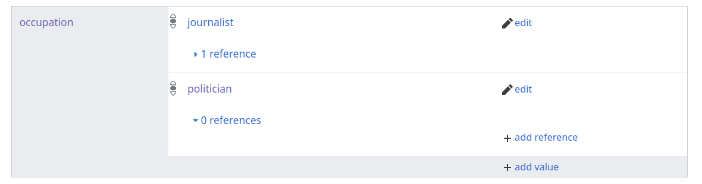
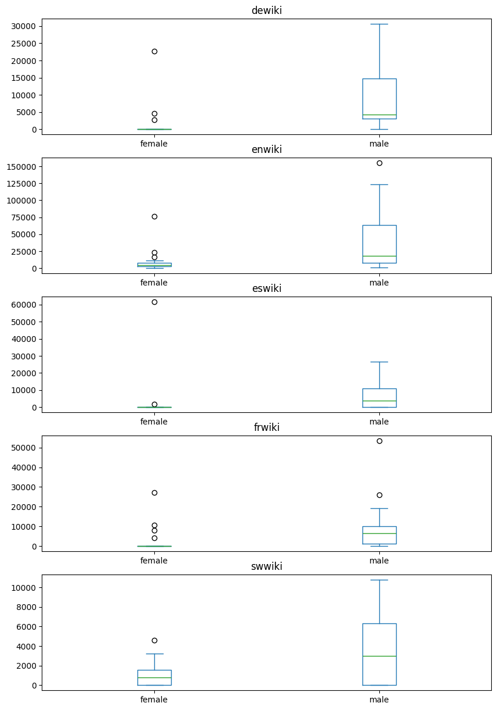

import pywikibot # load the whole library
# then we specifically import the page generator so we can iterate over all returned items
from pywikibot import pagegenerators as pg
# we query Wikidata directly, not the english language Wikipedia
wikidata_site = pywikibot.Site("wikidata", "wikidata")
# let's translate our query into SPARQL
QUERY = """
SELECT DISTINCT ?item
WHERE {
?item wdt:P31 wd:Q5; # Any instance of a human;
wdt:P106 wd:Q82955; # occupation politician;
wdt:P27 wd:Q114; # citizen of kenya;
}
LIMIT 5
"""Using Wikidata
Wikidata is a collaboratively maintained knowledge-base that is part of the larger Wikimedia universe and that includes more than 120,000,000 data entities. This data is also used to cross-link pages about the same subject across Wiki projects (like different language versions).
Main concepts
The knowledge-base of Wikidata consists of items that are further described by having properties which can have different values (these values in turn can be items too). Together properties and values make up statements about a given item
The Introduction to Wikidata uses this example to make it less abstract, using the British Science Fiction writer Douglas Adams as an example:

The highlighted statement (green) is about Adams’ education, shown as the educated_at property (violet) and gives two values for this, St John's College (demonstrated in orange) and Brentwood School. In this case, both of these values are Wikidata items themselves. But in other cases, this could also just be a simple value, e.g. a date for the birth date.
Each of those statements can also be further qualified and supported by references, depending on the property in question. Qualifications, like seen here, could be start/end dates, degrees, titles and more.
Wikidata can be queried using the SPARQL query language, which allows joining together required values for different properties to search for items.
Motivation
When we tried to find all Kenyan politicians, we used the Category:Kenyan politicians category of the English language Wikipedia as our starting point. But, this is not ideal as it will include false-positives, in the form of pages that are not actually articles that describe politicians, and false-negatives - that is actual pages from Kenyan politicians might be missing because they aren’t listed.
As an example for a false-positive when using the Category namespace: As there are many sub-categories for our category, we used recursion=True on the Category:Kenyan politicians, to make sure we get all the pages of politicians. But, our resulting list of pages surprisingly also includes the page about the Jomo Kenyatta International Airport!
Why? It’s because the page of the airport is part of the Category:Jomo Kenyatta, which in turn is part of Category:Presidents of Kenya, which in turn is part of Category:Political office-holders in Kenya, which - finally - is part of Category:Kenyan politicians.
Wikidata queries to find all pages of a type
By writing a more narrow query for Wikidata, we can avoid such false-positives – and also get a whole range of cross-links between the different Wiki projects, e.g. to find the English, and Swahili editions of the same article.
Writing a query
what properties and values could we use to find only Kenyan politicians?
- The articles should be about people, not airports. So we can filter to find items that describe humans only. If we search for this in Wikidata, we find that the corresponding property/value translates to
P31(instance of) and that humans are described by itemQ5. - Now, to find politicians, we can filter by finding items that additionally give the occupation
P106as politician (Q82955). - Lastly, we are looking for politicians that are from Kenya. One potential way to narrow it down to this could be filtering for the country of citizenship (
P27) to be Kenya (Q114).
If we look at the Wikidata item for Jomo Kenyatta, we find those properties showing up like this:



Querying using pywikibot
Let’s now translate this into creating a SPARQL query that the pywikibot can run for us.
First, we load the necessary library again, and then we write out the query using the SPARQL syntax:
We use SELECT DISTINCT to avoid returning duplicate items, and use ?item to get the whole Wikidata item returned for further processing.
In the WHERE clause, we add our three distinct property/value pairs that we all want to be present, and ultimately give a LIMIT of how many Wikidata items we’d like to get returned.
Getting help writing queries
Wikimedia runs its own Query Service for Wikidata. You can use that to explore example queries and test browsers in a simpler interface to directly see if your query is well formatted and what it returns.
Once we got this query written, we can now turn this into a generator, that will allow us to make a loop over all returned elements.
We will alrady look at some of the data we get back:
generator = pg.WikidataSPARQLPageGenerator(QUERY, site=wikidata_site)
for item in generator:
print("item label (en): {}".format(
item.labels['en']
))
if 'en' in item.descriptions:
print("item description (en): {}".format(
item.descriptions['en']
))
print("sitelinks: {}".format(list(
item.sitelinks
)))
if 'enwiki' in item.sitelinks:
print("sitelink to enwiki: {}".format(
item.sitelinks["enwiki"]))
print("----------")item label (en): Moses Mudavadi
item description (en): Kenyan politician (1923-1989)
sitelinks: ['dewiki', 'enwiki']
sitelink to enwiki: [[Moses Mudavadi]]
----------
item label (en): Jomo Kenyatta
item description (en): first Prime Minister (1963 to 1964) and President (1964 to 1978) of self-governing Kenya
sitelinks: ['afwiki', 'amwiki', 'arwiki', 'arwikiquote', 'arzwiki', 'astwiki', 'bewiki', 'bgwiki', 'bnwiki', 'brwiki', 'cawiki', 'ckbwiki', 'commonswiki', 'cswiki', 'dagwiki', 'dawiki', 'dewiki', 'dinwiki', 'elwiki', 'enwiki', 'enwikiquote', 'eowiki', 'eswiki', 'eswikiquote', 'etwiki', 'euwiki', 'fawiki', 'fiwiki', 'fonwiki', 'fowiki', 'frwiki', 'glwiki', 'gpewiki', 'hawiki', 'hewiki', 'hiwiki', 'hrwiki', 'huwiki', 'hywwiki', 'idwiki', 'iowiki', 'iswiki', 'itwiki', 'itwikiquote', 'jawiki', 'jvwiki', 'kawiki', 'kiwiki', 'kowiki', 'lbwiki', 'ltwiki', 'lvwiki', 'madwiki', 'mkwiki', 'mlwiki', 'mrwiki', 'mswiki', 'ndswiki', 'nlwiki', 'nowiki', 'ocwiki', 'plwiki', 'plwikiquote', 'ptwiki', 'quwiki', 'rowiki', 'ruwiki', 'rwwiki', 'simplewiki', 'skwiki', 'slwiki', 'snwiki', 'sowiki', 'sqwiki', 'srwiki', 'svwiki', 'swwiki', 'thwiki', 'tlwiki', 'tnwiki', 'trwiki', 'ukwiki', 'vecwiki', 'viwiki', 'warwiki', 'wuuwiki', 'xmfwiki', 'yowiki', 'zhwiki']
sitelink to enwiki: [[Jomo Kenyatta]]
----------
item label (en): William Ruto
item description (en): President of Kenya since 2022
sitelinks: ['afwiki', 'arwiki', 'arzwiki', 'azwiki', 'bclwiki', 'bewiki', 'cawiki', 'commonswiki', 'cswiki', 'dawiki', 'dewiki', 'elwiki', 'enwiki', 'enwikiquote', 'eowiki', 'eowikinews', 'eswiki', 'fawiki', 'fiwiki', 'frwiki', 'hawiki', 'hewiki', 'hiwiki', 'hywiki', 'idwiki', 'iswiki', 'itwiki', 'jawiki', 'kawiki', 'kcgwiki', 'kiwiki', 'kowiki', 'lawiki', 'lbwiki', 'lvwiki', 'mswiki', 'nlwiki', 'nowiki', 'ocwiki', 'plwiki', 'pswiki', 'ptwiki', 'rowiki', 'ruwiki', 'ruwikinews', 'ruwikiquote', 'rwwiki', 'simplewiki', 'srwiki', 'sswiki', 'svwiki', 'swwiki', 'tawiki', 'taywiki', 'trwiki', 'ukwiki', 'urwiki', 'uzwiki', 'zhwiki']
sitelink to enwiki: [[William Ruto]]
----------
item label (en): Uhuru Kenyatta
item description (en): 4th President of Republic of Kenya (2013–2022)
sitelinks: ['afwiki', 'amiwiki', 'arwiki', 'arzwiki', 'astwiki', 'bewiki', 'bnwiki', 'brwiki', 'cawiki', 'cswiki', 'dawiki', 'dewiki', 'dinwiki', 'elwiki', 'enwiki', 'enwikiquote', 'eowiki', 'eswiki', 'etwiki', 'euwiki', 'fawiki', 'fiwiki', 'frwiki', 'gpewiki', 'hewiki', 'hiwiki', 'hywwiki', 'idwiki', 'iewiki', 'iowiki', 'iswiki', 'itwiki', 'jawiki', 'kawiki', 'kiwiki', 'kowiki', 'lawiki', 'lbwiki', 'mlwiki', 'mrwiki', 'mswiki', 'newiki', 'nlwiki', 'nowiki', 'plwiki', 'pswiki', 'ptwiki', 'ruwiki', 'ruwikinews', 'shwiki', 'simplewiki', 'slwiki', 'sowiki', 'srwiki', 'svwiki', 'swwiki', 'szywiki', 'taywiki', 'tgwiki', 'trvwiki', 'trwiki', 'ukwiki', 'urwiki', 'viwiki', 'xmfwiki', 'yowiki', 'zh_yuewiki', 'zhwiki']
sitelink to enwiki: [[Uhuru Kenyatta]]
----------
item label (en): Daniel arap Moi
item description (en): Kenyan President (2nd) (1924-2020)
sitelinks: ['afwiki', 'amwiki', 'arwiki', 'arzwiki', 'astwiki', 'bewiki', 'brwiki', 'cawiki', 'commonswiki', 'cswiki', 'cywiki', 'dawiki', 'dewiki', 'elwiki', 'enwiki', 'eowiki', 'eswiki', 'etwiki', 'euwiki', 'fawiki', 'fiwiki', 'frwiki', 'glwiki', 'hewiki', 'hiwiki', 'huwiki', 'hywwiki', 'idwiki', 'iowiki', 'iswiki', 'itwiki', 'jawiki', 'kawiki', 'kowiki', 'lbwiki', 'mrwiki', 'nlwiki', 'nowiki', 'ocwiki', 'plwiki', 'plwikiquote', 'ptwiki', 'quwiki', 'ruwiki', 'rwwiki', 'simplewiki', 'slwiki', 'sowiki', 'srwiki', 'suwiki', 'svwiki', 'swwiki', 'tnwiki', 'trwiki', 'ukwiki', 'urwiki', 'vecwiki', 'viwiki', 'warwiki', 'wuuwiki', 'yowiki', 'zhwiki']
sitelink to enwiki: [[Daniel arap Moi]]
----------For many items, the labels and descriptions will be available in multiple languages. Here, we printed only the English one.
And as you see in the sitelinks, Wikidata also returns the cross-links to other Wiki projects, like the English (enwiki) and Swahili (swwiki) language editions of Wikipedia. This allows us now to switch to Wikipedia and read the articles as before:
Exploring what the most common language editions are
Let’s say we’re interested to explore how different politicians are represented (or not) across language editions. While there’s a large number of languages, let’s pick a small subset of languages to work with for this example. If you have languages you’re interest in, you can add them in the same format to the list, using the corresponding 2-letter ISO 639 language code.
languages = [
"enwiki",
"swwiki",
"dewiki",
"frwiki",
"eswiki",
]Let’s now expand our query a bit and get 10 entries for politicians instead of just 5, and then create a dataframe that contains the wiki-links for each of those combinations of politician & language-edition if present:
import pandas as pd # we'll need pandas to create the DF, your pandas version should be 2.1 or newer
QUERY = """
SELECT DISTINCT ?item
WHERE {
?item wdt:P31 wd:Q5; # Any instance of a human;
wdt:P106 wd:Q82955; # occupation politician;
wdt:P27 wd:Q114; # citizen of kenya;
}
LIMIT 20
"""
generator = pg.WikidataSPARQLPageGenerator(QUERY, site=wikidata_site)
politicians = {} # create an empty dictionary that will hold the names as keys, and another dictionary with {'enwiki': '$pagename', …}
for item in generator:
label = item.labels['en']
politicians[label] = {}
print('get languages for {}'.format(label))
sitelinks = item.sitelinks
for language in languages:
if language in sitelinks.keys():
politicians[label][language] = sitelinks[language].canonical_title()
else:
politicians[label][language] = ""
df_language_links = pd.DataFrame(politicians).T # use .T to transpose, so that policians are rows and languages are columns
df_language_linksget languages for Jomo Kenyatta
get languages for Mwai Kibaki
get languages for Grace Emily Akinyi Ogot
get languages for Wangari Muta Maathai
get languages for Harry Thuku
get languages for McDonald Mariga
get languages for Daniel arap Moi
get languages for Moses Wetangula
get languages for Uhuru Kenyatta
get languages for Raila A Odinga
get languages for Wesley Korir
get languages for Bildad Kaggia
get languages for Moses Mudavadi
get languages for Richard Leakey
get languages for Elijah Lagat
get languages for Abdilatif Abdalla
get languages for William Ruto
get languages for David Lelei
get languages for Newton Kulundu
get languages for Robert Ouko| enwiki | swwiki | dewiki | frwiki | eswiki | |
|---|---|---|---|---|---|
| Jomo Kenyatta | Jomo Kenyatta | Jomo Kenyatta | Jomo Kenyatta | Jomo Kenyatta | Jomo Kenyatta |
| Mwai Kibaki | Mwai Kibaki | Mwai Kibaki | Mwai Kibaki | Mwai Kibaki | Mwai Kibaki |
| Grace Emily Akinyi Ogot | Grace Ogot | Grace Ogot | Grace Ogot | Grace Ogot | |
| Wangari Muta Maathai | Wangarĩ Maathai | Wangari Maathai | Wangari Maathai | Wangari Muta Maathai | Wangari Maathai |
| Harry Thuku | Harry Thuku | Harry Thuku | Harry Thuku | ||
| McDonald Mariga | McDonald Mariga | McDonald Mariga | McDonald Mariga | McDonald Mariga | McDonald Mariga |
| Daniel arap Moi | Daniel arap Moi | Daniel Arap Moi | Daniel arap Moi | Daniel arap Moi | Daniel arap Moi |
| Moses Wetangula | Moses Wetang'ula | Moses Wetangula | Moses Wetangula | Moses Wetangula | |
| Uhuru Kenyatta | Uhuru Kenyatta | Uhuru Kenyatta | Uhuru Kenyatta | Uhuru Kenyatta | Uhuru Kenyatta |
| Raila A Odinga | Raila Odinga | Raila Odinga | Raila Odinga | Raila Odinga | Raila Odinga |
| Wesley Korir | Wesley Korir | Wesley Korir | Wesley Korir | ||
| Bildad Kaggia | Bildad Kaggia | Bildad Kaggia | Bildad Kaggia | ||
| Moses Mudavadi | Moses Mudavadi | Moses Mudavadi | |||
| Richard Leakey | Richard Leakey | Richard Leakey | Richard Leakey | Richard Leakey | Richard Leakey |
| Elijah Lagat | Elijah Lagat | Elijah Lagat | Elijah Lagat | Elijah Lagat | |
| Abdilatif Abdalla | Abdilatif Abdalla | Abdilatif Abdalla | Abdilatif Abdalla | Abdilatif Abdalla | Abdilatif Abdalla |
| William Ruto | William Ruto | William Ruto | William Ruto | William Ruto | William Ruto |
| David Lelei | David Lelei | David Lelei | David Lelei | David Lelei | |
| Newton Kulundu | Newton Kulundu | Newton Kulundu | |||
| Robert Ouko | Robert Ouko (politician) | Robert Ouko | Robert Ouko (Politiker) | Robert Ouko | Robert Ouko (político) |
This gives us a nice data frame that includes all the links to the different pages acrosst the target languages. Why did we decide to keep the actual links as values instead of directly just making a binary “yes/no” evaluation?
Because the actual names of the pages can differ between language editions, e.g. Jaramogi Oginga Odinga is the page name in the English Wikipedia, but in French & Spanish it’s Oginga Odinga. Which means if we want to keep working with the actual pages, we should keep those names to be able to query them.
But let’s now make a small presence/absence Matrix:
pam_df = df_language_links.map(lambda x: int(bool(x))) # create presence/absence matrix
pam_df.style.background_gradient(cmap ='viridis',axis=None) # use axis=None to display heatmap calculated across whole DF| enwiki | swwiki | dewiki | frwiki | eswiki | |
|---|---|---|---|---|---|
| Jomo Kenyatta | 1 | 1 | 1 | 1 | 1 |
| Mwai Kibaki | 1 | 1 | 1 | 1 | 1 |
| Grace Emily Akinyi Ogot | 1 | 1 | 1 | 1 | 0 |
| Wangari Muta Maathai | 1 | 1 | 1 | 1 | 1 |
| Harry Thuku | 1 | 0 | 1 | 1 | 0 |
| McDonald Mariga | 1 | 1 | 1 | 1 | 1 |
| Daniel arap Moi | 1 | 1 | 1 | 1 | 1 |
| Moses Wetangula | 1 | 1 | 1 | 1 | 0 |
| Uhuru Kenyatta | 1 | 1 | 1 | 1 | 1 |
| Raila A Odinga | 1 | 1 | 1 | 1 | 1 |
| Wesley Korir | 1 | 0 | 1 | 1 | 0 |
| Bildad Kaggia | 1 | 1 | 1 | 0 | 0 |
| Moses Mudavadi | 1 | 0 | 1 | 0 | 0 |
| Richard Leakey | 1 | 1 | 1 | 1 | 1 |
| Elijah Lagat | 1 | 1 | 1 | 0 | 1 |
| Abdilatif Abdalla | 1 | 1 | 1 | 1 | 1 |
| William Ruto | 1 | 1 | 1 | 1 | 1 |
| David Lelei | 1 | 0 | 1 | 1 | 1 |
| Newton Kulundu | 1 | 0 | 1 | 0 | 0 |
| Robert Ouko | 1 | 1 | 1 | 1 | 1 |
This shows us some differences, both between individual politicians and the language editions, e.g. the Spanish Wikipedia has fewer articles for this set of politicians.
But how long are those articles? Let’s convert this into looking at length, instead of presence/absence. First we need to set up the different Site objects for the different languages, so that we can query those.
And then we re-use our existing politicians dictionary to query the WP API for the corresponding page lengths, and save those in a dictionary that we can ultimately convert into a DataFrame.
Note: Querying all of those pages across language editions can take some time due to API limits.
language_sites = {} # let's store the site objects in a dict, so we can use them for our queries
for language in languages:
language_sites[language] = pywikibot.Site(language[:2], 'wikipedia') # [:2] to get the language prefix
# for now we store the article lengths in a dict
article_lengths = {}
for politician in politicians:
article_lengths[politician] = {}
for language in politicians[politician]:
if politicians[politician][language]:
page = pywikibot.Page(language_sites[language], politicians[politician][language])
article_lengths[politician][language] = len(page.text)
else: # don't have a page, so length is zero
article_lengths[politician][language] = 0
df_article_length = pd.DataFrame(article_lengths).TNow that we got the data frame with article lengths, we can plot it as a heat map again. The heatmap was done over all cells. To better compare the lengths within a language, we now instead color by column, i.e. language edition:
df_article_length.style.background_gradient(cmap ='viridis',axis=0)| enwiki | swwiki | dewiki | frwiki | eswiki | |
|---|---|---|---|---|---|
| Jomo Kenyatta | 154905 | 5528 | 25027 | 13234 | 15096 |
| Mwai Kibaki | 89924 | 10254 | 13499 | 9307 | 7643 |
| Grace Emily Akinyi Ogot | 16636 | 4621 | 4682 | 8000 | 0 |
| Wangari Muta Maathai | 76445 | 3211 | 22759 | 27246 | 61486 |
| Harry Thuku | 13230 | 0 | 3704 | 12453 | 0 |
| McDonald Mariga | 19953 | 4250 | 25325 | 7607 | 15887 |
| Daniel arap Moi | 55812 | 10665 | 9839 | 8431 | 10622 |
| Moses Wetangula | 19496 | 2758 | 4878 | 2891 | 0 |
| Uhuru Kenyatta | 120687 | 8931 | 24740 | 26056 | 11713 |
| Raila A Odinga | 123275 | 10775 | 30587 | 53369 | 6078 |
| Wesley Korir | 16759 | 0 | 3764 | 9470 | 0 |
| Bildad Kaggia | 9495 | 823 | 3845 | 0 | 0 |
| Moses Mudavadi | 985 | 0 | 1033 | 0 | 0 |
| Richard Leakey | 44530 | 3165 | 10229 | 8184 | 20600 |
| Elijah Lagat | 12564 | 1091 | 4761 | 0 | 5463 |
| Abdilatif Abdalla | 4222 | 1564 | 3818 | 1056 | 3112 |
| William Ruto | 87709 | 8643 | 18334 | 19112 | 26486 |
| David Lelei | 5151 | 0 | 1779 | 3847 | 4818 |
| Newton Kulundu | 4786 | 0 | 3386 | 0 | 0 |
| Robert Ouko | 47295 | 7637 | 1867 | 14852 | 2641 |
Working with claims
Now that we have seen how we can bridge between Wikidata items and Wikipedia pages, let us see how we can explore the Wikidata knowledge graph a bit more beyond just getting the objects and cross-links.
One thing that many Wikidata items about people contain, is the gender of the person they describe, which we need if we want to explore if Wikipedia articles describing people’s biographies differ between gender of the person. Inferring a person’s gender is a fraught effort, and misclassifications are not distributed amongst race or ethnicity. In Wikidata knowledge graph, gender is represented by property P21 (technically, Wikidata translates that to sex or gender), which would allow
To get explore this, let’s query a single politician using the same query as before and use that Wikidata item to explore the knowledge graph:
QUERY = """
SELECT DISTINCT ?item
WHERE {
?item wdt:P31 wd:Q5; # Any instance of a human;
wdt:P106 wd:Q82955; # occupation politician;
wdt:P27 wd:Q114; # citizen of kenya;
}
LIMIT 1
"""
generator = pg.WikidataSPARQLPageGenerator(QUERY, site=wikidata_site)
wikidata_item = generator.__next__() # to just emit the single response
print('got {} as politician'.format(wikidata_item.labels['en'])) got Moses Mudavadi as politicianNow that we got our wikidata item, let’s find out if it contains claim about the person’s gender:
# p21: gender
# [0] get the first claim for this property - for some properties there could be multiple claims!
# target: Get the value of that claim - can be an item too
# label: get english name of item, i.e. gender marker in english
wikidata_item.claims['P21'][0].target.labels['en']'male'Let’s look at this step by step:
- `.claims[‘P21’] asks to get all values of this property for our Wikidata item of interest. Items can have zero to many claims for a given property. We need to consider this when doing error handling.
-
[0]- we are interested in only looking at the first value for this property, in case there’d be multiple. Of course, depending on the property, we could be interested at looking at all of them! -
.targetgives us the actual value of that claim. Forgenderthis will be another Wikidata item, which has translatable labels
Bringing it together
Now, let’s try to get a set of politicians, their gender according to Wikidata and then get the page lengths for the diferrent language editions. We can then do a simple comparison between article length and gender in those languages:
QUERY = """
SELECT DISTINCT ?item
WHERE {
?item wdt:P31 wd:Q5; # Any instance of a human;
wdt:P106 wd:Q82955; # occupation politician;
wdt:P27 wd:Q114; # citizen of kenya;
}
LIMIT 10
"""
LANGUAGES = [
"enwiki",
"swwiki",
"dewiki",
"frwiki",
"eswiki",
]
LANGUAGE_SITES = {} # let's store the site objects in a dict, so we can use them for our queries
for language in LANGUAGES:
LANGUAGE_SITES[language] = pywikibot.Site(language[:2], 'wikipedia') # [:2] to get the language prefix
# Let's wrap some of the code we wrote above into functions, to make it easier to call and ultimately merge it into a dataframe at the end!
def get_gender(wikidata_item):
if "P21" in wikidata_item.claims.keys():
return wikidata_item.claims['P21'][0].target.labels['en']
else:
return "unknown"
def run_query(QUERY):
generator = pg.WikidataSPARQLPageGenerator(QUERY, site=wikidata_site)
politician_data = {}
for item in generator:
qid = item.getID() # get unique ID
politician_data[qid] = {} # initialize dictionary
politician_data[qid]['gender'] = get_gender(item) # add gender
politician_data[qid]['label'] = item.labels['en'] # add english label
print('get languages for {}'.format(qid))
sitelinks = item.sitelinks
for language in LANGUAGES:
if language in sitelinks.keys():
page_title = sitelinks[language].canonical_title()
page = pywikibot.Page(LANGUAGE_SITES[language], page_title)
politician_data[qid][language] = len(page.text)
else: # don't have a page, so length is zero
politician_data[qid][language] = 0
return politician_datapolitician_data = run_query(QUERY)
pd.DataFrame(politician_data).Tget languages for Q121708
get languages for Q173563
get languages for Q318960
get languages for Q46795
get languages for Q308189
get languages for Q195725
get languages for Q196070
get languages for Q202077
get languages for Q313893
get languages for Q193492| gender | label | enwiki | swwiki | dewiki | frwiki | eswiki | |
|---|---|---|---|---|---|---|---|
| Q121708 | male | Moses Mudavadi | 985 | 0 | 1033 | 0 | 0 |
| Q173563 | male | Jomo Kenyatta | 154905 | 5528 | 25027 | 13234 | 15096 |
| Q318960 | male | Richard Leakey | 44530 | 3165 | 10229 | 8184 | 20600 |
| Q46795 | female | Wangari Muta Maathai | 76445 | 3211 | 22759 | 27246 | 61486 |
| Q308189 | male | Abdilatif Abdalla | 4222 | 1564 | 3818 | 1056 | 3112 |
| Q195725 | male | William Ruto | 87709 | 8643 | 18334 | 19112 | 26486 |
| Q196070 | male | Uhuru Kenyatta | 120687 | 8931 | 24740 | 26056 | 11713 |
| Q202077 | male | Harry Thuku | 13230 | 0 | 3704 | 12453 | 0 |
| Q313893 | male | McDonald Mariga | 19953 | 4250 | 25325 | 7607 | 15887 |
| Q193492 | male | Daniel arap Moi | 55812 | 10665 | 9839 | 8431 | 10622 |
While this form of querying works, it shows quite a heavy gender bias (which could be in politics, in Wikipedia, or both?). Either way, by querying without gender, we end up with an overwhelmingly male data set.
To be able to actually make a comparison, let’s do two queries instead, one for male and one for female politicians:
male_query = """
SELECT DISTINCT ?item
WHERE {
?item wdt:P31 wd:Q5; # Any instance of a human;
wdt:P106 wd:Q82955; # occupation politician;
wdt:P27 wd:Q114; # citizen of kenya;
wdt:P21 wd:Q6581097; # male
}
LIMIT 20
"""
female_query = """
SELECT DISTINCT ?item
WHERE {
?item wdt:P31 wd:Q5; # Any instance of a human;
wdt:P106 wd:Q82955; # occupation politician;
wdt:P27 wd:Q114; # citizen of kenya;
wdt:P21 wd:Q6581072; # female
}
LIMIT 20
"""
male_politicians = run_query(male_query)
female_politicians = run_query(female_query)
get languages for Q173563
get languages for Q57291
get languages for Q202077
get languages for Q313893
get languages for Q1372633
get languages for Q193492
get languages for Q58188
get languages for Q196070
get languages for Q57657
get languages for Q447119
get languages for Q1441663
get languages for Q121708
get languages for Q1395018
get languages for Q318960
get languages for Q346046
get languages for Q593552
get languages for Q308189
get languages for Q195725
get languages for Q456466
get languages for Q457713
get languages for Q47489991
get languages for Q539821
get languages for Q47490021
get languages for Q469641
get languages for Q47486849
get languages for Q46795
get languages for Q47490039
get languages for Q47490043
get languages for Q47489052
get languages for Q47490033
get languages for Q47490038
get languages for Q565671
get languages for Q47483883
get languages for Q47490037
get languages for Q47490046
get languages for Q47490050
get languages for Q47490030
get languages for Q47490034
get languages for Q44090439
get languages for Q47490045Now we can merge the two dictionaries and create one dataframe:
all_politicians = female_politicians | male_politicians
df_all_politicians = pd.DataFrame(all_politicians).T
df_all_politicians| gender | label | enwiki | swwiki | dewiki | frwiki | eswiki | |
|---|---|---|---|---|---|---|---|
| Q47489991 | female | Gladwell Jesire Cheruiyot | 4350 | 1342 | 0 | 0 | 0 |
| Q539821 | female | Charity Ngilu | 23356 | 1772 | 2740 | 10607 | 1800 |
| Q47490021 | female | Joyce Chepkoech Korir | 4077 | 645 | 0 | 0 | 0 |
| Q469641 | female | Grace Emily Akinyi Ogot | 16636 | 4621 | 4682 | 8000 | 0 |
| Q47486849 | female | Gertrude Mbeyu Mwanyanje | 1293 | 0 | 0 | 0 | 0 |
| Q46795 | female | Wangari Muta Maathai | 76445 | 3211 | 22759 | 27246 | 61486 |
| Q47490039 | female | Janet Marania Teyiaa | 7209 | 0 | 0 | 0 | 0 |
| Q47490043 | female | Florence Bore | 5265 | 1718 | 0 | 4171 | 0 |
| Q47489052 | female | Gladys Wanga | 5150 | 1417 | 0 | 0 | 0 |
| Q47490033 | female | Jane Jepkorir Kiptoo Chebaibai | 4073 | 0 | 0 | 0 | 0 |
| Q47490038 | female | Rehema Dida Jaldesa | 0 | 0 | 0 | 0 | 0 |
| Q565671 | female | Anne Nyokabi Muhoho | 2144 | 0 | 0 | 0 | 0 |
| Q47483883 | female | Elsie Busihile Muhanda | 1930 | 0 | 0 | 0 | 0 |
| Q47490037 | female | Anab Mohamed Gure | 0 | 0 | 0 | 0 | 0 |
| Q47490046 | female | Purity Wangui Ngirici | 2682 | 1443 | 0 | 0 | 0 |
| Q47490050 | female | Zuleikha Ju Ma Hassan | 4773 | 2609 | 0 | 0 | 0 |
| Q47490030 | female | Catherine Nanjala Wambilianga | 2536 | 690 | 0 | 0 | 0 |
| Q47490034 | female | Jane Wanjuki Njiru | 4486 | 933 | 0 | 0 | 0 |
| Q44090439 | female | Roslyne Akombe | 11692 | 613 | 0 | 0 | 0 |
| Q47490045 | female | Gathoni Wamuchomba | 9254 | 1525 | 0 | 0 | 0 |
| Q173563 | male | Jomo Kenyatta | 154905 | 5528 | 25027 | 13234 | 15096 |
| Q57291 | male | Mwai Kibaki | 89924 | 10254 | 13499 | 9307 | 7643 |
| Q202077 | male | Harry Thuku | 13230 | 0 | 3704 | 12453 | 0 |
| Q313893 | male | McDonald Mariga | 19953 | 4250 | 25325 | 7607 | 15887 |
| Q1372633 | male | Gitobu Imanyara | 4593 | 4758 | 0 | 1856 | 0 |
| Q193492 | male | Daniel arap Moi | 55812 | 10665 | 9839 | 8431 | 10622 |
| Q58188 | male | Moses Wetangula | 19496 | 2758 | 4878 | 2891 | 0 |
| Q196070 | male | Uhuru Kenyatta | 120687 | 8931 | 24740 | 26056 | 11713 |
| Q57657 | male | Raila A Odinga | 123275 | 10775 | 30587 | 53369 | 6078 |
| Q447119 | male | Wesley Korir | 16759 | 0 | 3764 | 9470 | 0 |
| Q1441663 | male | Francis Muthaura | 11033 | 0 | 2896 | 1359 | 0 |
| Q121708 | male | Moses Mudavadi | 985 | 0 | 1033 | 0 | 0 |
| Q1395018 | male | Kalonzo Musyoka | 28477 | 2510 | 2659 | 5503 | 0 |
| Q318960 | male | Richard Leakey | 44530 | 3165 | 10229 | 8184 | 20600 |
| Q346046 | male | Elijah Lagat | 12564 | 1091 | 4761 | 0 | 5463 |
| Q593552 | male | Michael Kijana Wamalwa | 8368 | 5503 | 3166 | 0 | 0 |
| Q308189 | male | Abdilatif Abdalla | 4222 | 1564 | 3818 | 1056 | 3112 |
| Q195725 | male | William Ruto | 87709 | 8643 | 18334 | 19112 | 26486 |
| Q456466 | male | David Lelei | 5151 | 0 | 1779 | 3847 | 4818 |
| Q457713 | male | Newton Kulundu | 4786 | 0 | 3386 | 0 | 0 |
Now let’s try plotting this as a boxplot, grouping by gender for each of the languages:
df_all_politicians.plot(kind='box',column=LANGUAGES, by=["gender"],layout=(5, 1),figsize=(10,15))dewiki Axes(0.125,0.747241;0.775x0.132759)
enwiki Axes(0.125,0.587931;0.775x0.132759)
eswiki Axes(0.125,0.428621;0.775x0.132759)
frwiki Axes(0.125,0.26931;0.775x0.132759)
swwiki Axes(0.125,0.11;0.775x0.132759)
dtype: object
Exploring the difference in number of pages by gender
Let’s also investigate how large the difference in number of recorded items is for male & female politicians in Wikidata. For that we can run two queries to just get the number of items:
SELECT DISTINCT (COUNT(?item) as ?count) # get count of items instead of actual pages
WHERE {
?item wdt:P31 wd:Q5; # Any instance of a human;
wdt:P106 wd:Q82955; # occupation politician;
wdt:P27 wd:Q114; # citizen of kenya;
wdt:P21 wd:Q6581097; # male
}and
SELECT DISTINCT (COUNT(?item) as ?count) # get count of items instead of actual pages
WHERE {
?item wdt:P31 wd:Q5; # Any instance of a human;
wdt:P106 wd:Q82955; # occupation politician;
wdt:P27 wd:Q114; # citizen of kenya;
wdt:P21 wd:Q6581072; # female
}We can run these directly using the Wikidata Query Service, without having to write code (e.g. for male and female politicians): This shows us that there are 224 items for female politicians, and 915 items for male politicians.
Using some very basic NLP to identify a gender from a Wikipedia page
So far, we have used the gender information as directly supplied by Wikidata (and even explicitly filtered for the presence of the information). But potentially this information is not present in all Wikidata items describing politicians.
Plus, if we think back to just querying category pages - we might want to also use Wikipedia pages directly, without expecting or needing a corresponding Wikidata item. How could we assign gender in that case? A ver simple example would be to count the pronouns in each page and use those to assign gender.
We can try to explore how well such an approach would work by using our existing set of politicians, loading the (English) articles and giving it a try:
wikidata_site = language_sites['enwiki'].data_repository() # setup wikidata site object
pronouns_female = ['she', 'her', 'herself', 'hers']
pronouns_male = ['he', 'him', 'himself', 'his']
pronoun_female_count = []
pronoun_male_count = []
for qid in df_all_politicians.index: # iterate over all qid which we so far used as df index
if 'enwiki' in pywikibot.ItemPage(wikidata_site, qid).sitelinks.keys(): # not all wikidata items have english language articles
article_title = pywikibot.ItemPage(wikidata_site, qid).sitelinks['enwiki'].canonical_title() # get english page title
page = pywikibot.Page(LANGUAGE_SITES['enwiki'], article_title) # get article text
page_text = page.text.lower() # make lower case to simplify matching
# sum up female pronoun counts, add to list
counts_female = 0
for p in pronouns_female:
counts_female += page_text.count(" {} ".format(p)) # require space before/after pronoun
pronoun_female_count.append(counts_female)
# sum up female pronoun counts, add to list
counts_male = 0
for p in pronouns_male:
counts_male += page_text.count(" {} ".format(p))
pronoun_male_count.append(counts_male)
else:
pronoun_female_count.append(0)
pronoun_male_count.append(0)
# add pronouns to DF
df_all_politicians['pronoun_female_count'] = pronoun_female_count
df_all_politicians['pronoun_male_count'] = pronoun_male_countdf_all_politicians| gender | label | enwiki | swwiki | dewiki | frwiki | eswiki | pronoun_female_count | pronoun_male_count | |
|---|---|---|---|---|---|---|---|---|---|
| Q47489991 | female | Gladwell Jesire Cheruiyot | 4350 | 1342 | 0 | 0 | 0 | 13 | 0 |
| Q539821 | female | Charity Ngilu | 23356 | 1772 | 2740 | 10607 | 1800 | 45 | 5 |
| Q47490021 | female | Joyce Chepkoech Korir | 4077 | 645 | 0 | 0 | 0 | 6 | 0 |
| Q469641 | female | Grace Emily Akinyi Ogot | 16636 | 4621 | 4682 | 8000 | 0 | 40 | 2 |
| Q47486849 | female | Gertrude Mbeyu Mwanyanje | 1293 | 0 | 0 | 0 | 0 | 1 | 0 |
| Q46795 | female | Wangari Muta Maathai | 76445 | 3211 | 22759 | 27246 | 61486 | 193 | 13 |
| Q47490039 | female | Janet Marania Teyiaa | 7209 | 0 | 0 | 0 | 0 | 15 | 0 |
| Q47490043 | female | Florence Bore | 5265 | 1718 | 0 | 4171 | 0 | 10 | 0 |
| Q47489052 | female | Gladys Wanga | 5150 | 1417 | 0 | 0 | 0 | 10 | 0 |
| Q47490033 | female | Jane Jepkorir Kiptoo Chebaibai | 4073 | 0 | 0 | 0 | 0 | 14 | 0 |
| Q47490038 | female | Rehema Dida Jaldesa | 0 | 0 | 0 | 0 | 0 | 0 | 0 |
| Q565671 | female | Anne Nyokabi Muhoho | 2144 | 0 | 0 | 0 | 0 | 7 | 0 |
| Q47483883 | female | Elsie Busihile Muhanda | 1930 | 0 | 0 | 0 | 0 | 8 | 0 |
| Q47490037 | female | Anab Mohamed Gure | 0 | 0 | 0 | 0 | 0 | 0 | 0 |
| Q47490046 | female | Purity Wangui Ngirici | 2682 | 1443 | 0 | 0 | 0 | 5 | 0 |
| Q47490050 | female | Zuleikha Ju Ma Hassan | 4773 | 2609 | 0 | 0 | 0 | 19 | 0 |
| Q47490030 | female | Catherine Nanjala Wambilianga | 2536 | 690 | 0 | 0 | 0 | 3 | 0 |
| Q47490034 | female | Jane Wanjuki Njiru | 4486 | 933 | 0 | 0 | 0 | 10 | 0 |
| Q44090439 | female | Roslyne Akombe | 11692 | 613 | 0 | 0 | 0 | 32 | 7 |
| Q47490045 | female | Gathoni Wamuchomba | 9254 | 1525 | 0 | 0 | 0 | 33 | 0 |
| Q173563 | male | Jomo Kenyatta | 154905 | 5528 | 25027 | 13234 | 15096 | 12 | 490 |
| Q57291 | male | Mwai Kibaki | 89924 | 10254 | 13499 | 9307 | 7643 | 2 | 168 |
| Q202077 | male | Harry Thuku | 13230 | 0 | 3704 | 12453 | 0 | 0 | 27 |
| Q313893 | male | McDonald Mariga | 19953 | 4250 | 25325 | 7607 | 15887 | 0 | 47 |
| Q1372633 | male | Gitobu Imanyara | 4593 | 4758 | 0 | 1856 | 0 | 0 | 16 |
| Q193492 | male | Daniel arap Moi | 55812 | 10665 | 9839 | 8431 | 10622 | 5 | 88 |
| Q58188 | male | Moses Wetangula | 19496 | 2758 | 4878 | 2891 | 0 | 0 | 46 |
| Q196070 | male | Uhuru Kenyatta | 120687 | 8931 | 24740 | 26056 | 11713 | 1 | 147 |
| Q57657 | male | Raila A Odinga | 123275 | 10775 | 30587 | 53369 | 6078 | 1 | 185 |
| Q447119 | male | Wesley Korir | 16759 | 0 | 3764 | 9470 | 0 | 0 | 56 |
| Q1441663 | male | Francis Muthaura | 11033 | 0 | 2896 | 1359 | 0 | 0 | 28 |
| Q121708 | male | Moses Mudavadi | 985 | 0 | 1033 | 0 | 0 | 0 | 3 |
| Q1395018 | male | Kalonzo Musyoka | 28477 | 2510 | 2659 | 5503 | 0 | 0 | 56 |
| Q318960 | male | Richard Leakey | 44530 | 3165 | 10229 | 8184 | 20600 | 3 | 90 |
| Q346046 | male | Elijah Lagat | 12564 | 1091 | 4761 | 0 | 5463 | 0 | 31 |
| Q593552 | male | Michael Kijana Wamalwa | 8368 | 5503 | 3166 | 0 | 0 | 0 | 38 |
| Q308189 | male | Abdilatif Abdalla | 4222 | 1564 | 3818 | 1056 | 3112 | 0 | 16 |
| Q195725 | male | William Ruto | 87709 | 8643 | 18334 | 19112 | 26486 | 1 | 129 |
| Q456466 | male | David Lelei | 5151 | 0 | 1779 | 3847 | 4818 | 0 | 8 |
| Q457713 | male | Newton Kulundu | 4786 | 0 | 3386 | 0 | 0 | 0 | 11 |
Now we got the absolute counts. For demonstration purposes, let’s now just make a very simple classifer, in which we assign the gender based on simple majority:
def assign_gender(row):
if row['pronoun_male_count'] != 0 and row['pronoun_female_count'] != 0:
ratio = row['pronoun_female_count'] / row['pronoun_male_count']
if ratio > 1:
return 'female'
else:
return 'male'
elif row['pronoun_male_count'] != 0:
return 'male'
else:
return 'female'
df_all_politicians['gender_nlp'] = df_all_politicians.apply(assign_gender,axis=1)We can now compare if the wikidata label and our prediction agree:
df_all_politicians['gender'] == df_all_politicians['gender_nlp']Q47489991 True
Q539821 True
Q47490021 True
Q469641 True
Q47486849 True
Q46795 True
Q47490039 True
Q47490043 True
Q47489052 True
Q47490033 True
Q47490038 True
Q565671 True
Q47483883 True
Q47490037 True
Q47490046 True
Q47490050 True
Q47490030 True
Q47490034 True
Q44090439 True
Q47490045 True
Q173563 True
Q57291 True
Q202077 True
Q313893 True
Q1372633 True
Q193492 True
Q58188 True
Q196070 True
Q57657 True
Q447119 True
Q1441663 True
Q121708 True
Q1395018 True
Q318960 True
Q346046 True
Q593552 True
Q308189 True
Q195725 True
Q456466 True
Q457713 True
dtype: bool